Fence That Holds, Arenas You Can Ride
Pipe, creosote, and traditional ranch fencing welded and set on site, plus riding arenas built from cleared ground all the way to finished rail and lights.
A Fence Is Only as Good as Its Corners
Anybody can run wire. What decides whether a fence is still tight in ten years is how the corners and braces were set, how deep the posts went, and whether the line was run to grade instead of over it. We weld on site, so corners and gates get built to fit the ground they are standing on rather than forced into a stock part.
Pipe Fence
Welded pipe for the fence line that has to last. Strongest option for livestock, road frontage, and anywhere you do not want to be repairing it every season.
Creosote Post Fence
Creosote posts set deep and braced right. The traditional ranch look, and it holds up to weather and rubbing better than most people expect.
Ranch & Field Fence
Net wire, barbed wire, and field fence run to grade across pasture and property lines, with corners and braces built to keep it tight.
Custom Entrances
Welded gates, columns, and ranch entrances. The entrance is the first thing anybody sees of a place, and we build it like it matters.
Gates & Cattle Guards
Gates hung to swing true and stay that way, plus cattle guards set and framed so the crossing holds up to equipment.
Pens & Working Alleys
Sorting pens, working alleys, and stall runs built out of pipe and panel, laid out so one person can move stock without a fight.
A Riding Arena From Raw Ground
Riding Arena with Pens and Lights
An arena is three jobs in one and we do all three. Clear the area, cut and level the ground so it drains instead of holding water, then set the fence, the pens, and the lighting around it. Because we run the dirt work ourselves, the base gets built the way the footing needs rather than however somebody else left it.
-
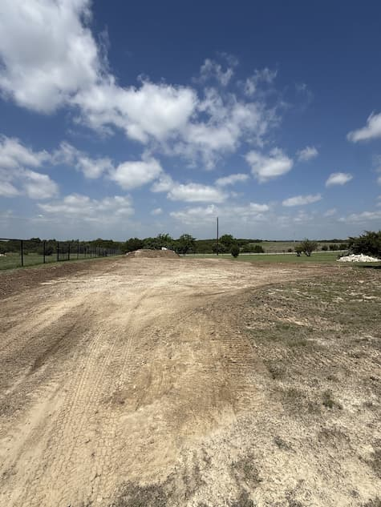
01Clear and Cut Brush off, area cleared, and the first passes cut to open up the footprint. -
02Leveled and Graded Ground cut flat and shaped to drain, so the footing works after a rain instead of holding water.
-
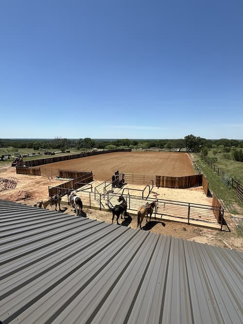
03Fence and Pens Arena fenced, sorting pens and alley set, gates hung and swinging true. -
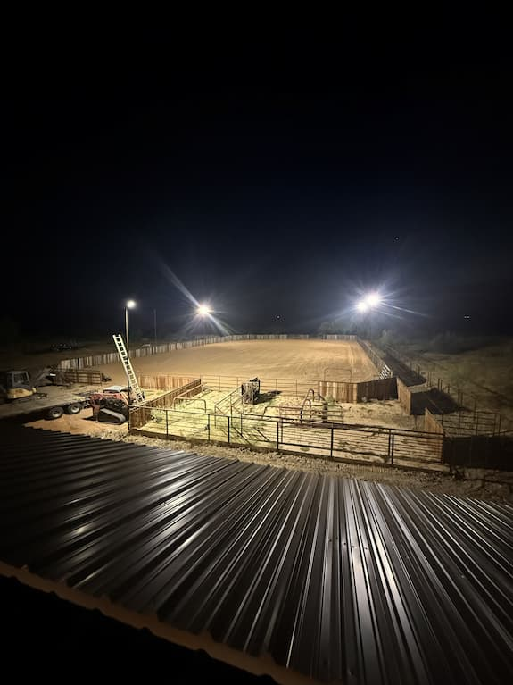
04Lights Up Arena lighting set and wired, so the day does not end when the sun does.
Drag the Handle, See the Difference
Same spot, same camera, two different days. Graded dirt on one side, finished arena on the other.
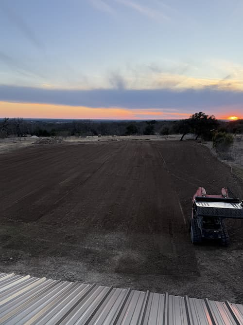

Cleared and graded ground to a finished, fenced, working arena.
Four Steps, Line to Gate
Walk the Line
We walk the fence line with you, look at the grade and the crossings, and count the corners and gates. Then you get a written scope and price at no cost.
Clear and Mark
Brush and trees cleared off the line, corners located, and the run marked so it goes in straight the first time.
Set and Weld
Posts set to depth, corners and braces built, and everything welded on site so it fits the ground instead of fighting it.
Hang and Walk
Gates hung and swung, debris hauled off, and we walk the finished line with you before we leave.
Fence Lines and Entrances
Pipe, creosote, and ranch fence, gates, pens, and custom entrances from jobs across Erath County.
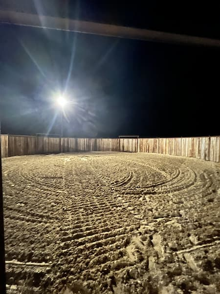
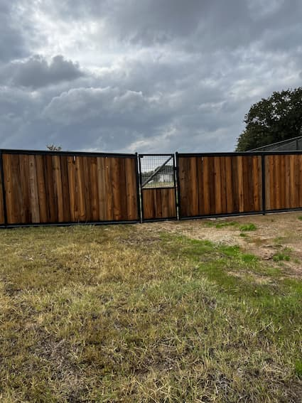
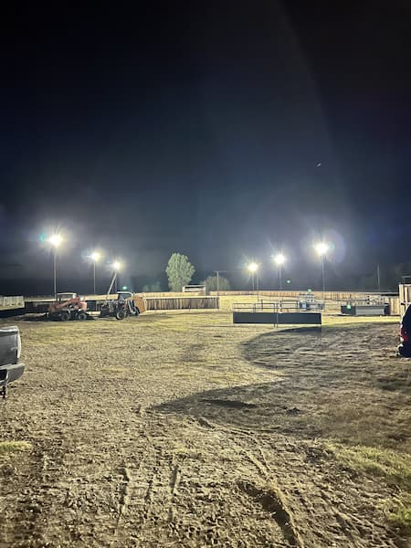
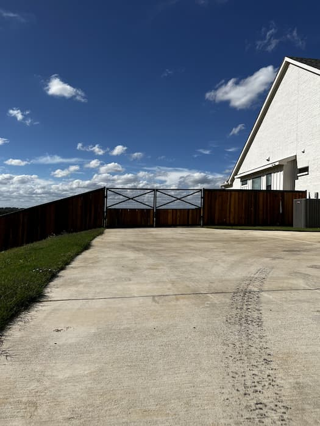
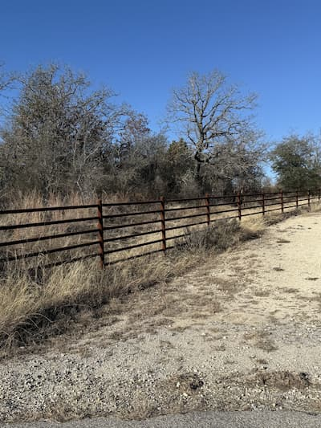
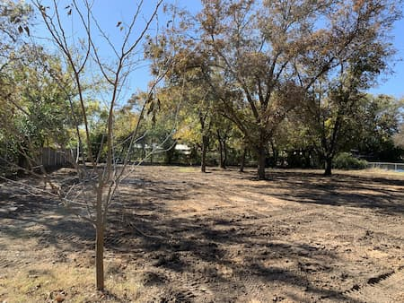
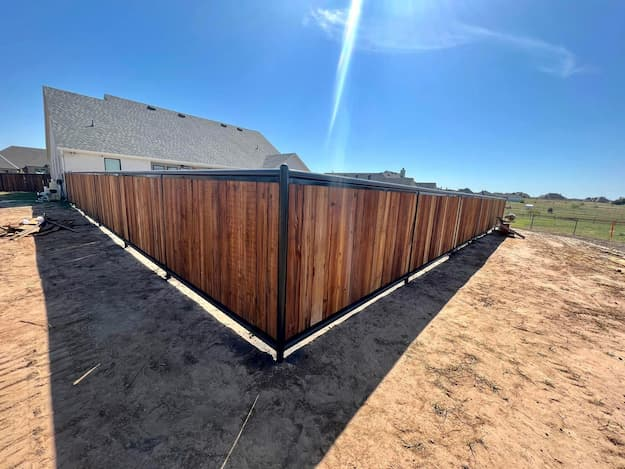
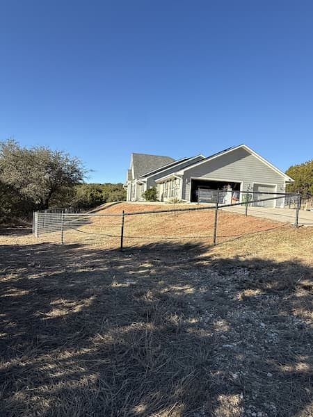
Got a Fence Line or an Arena in Mind?
Tell us how far, what is behind it, and where the property is. We will come walk it and put a real number in writing at no cost.
(512) 525-6475